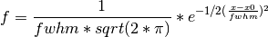
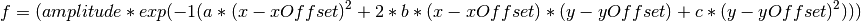
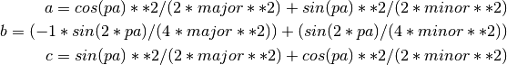
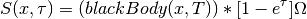
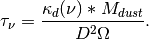
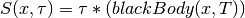
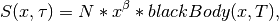
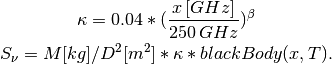
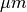

MapClass¶
The Map class is the parent class for the handling of astronomical map files in the FITS, GILDAS and MIRIAD data formats. It is meant to make handling maps easier by wrapping functions of GILDAS and MIRIAD and providing new functions in python on the basis of pyfits. It is using a ‘Name Convention’ for ease of use. Meaning that the file name already includes basic information about the map it contains. A Name that follows this ‘Convention’ is eg:
M33_30m-HERA_CO21_Ta*_12_cube.fits
All items MUST be seperated by an undescore (_) and have to include at minimum the following properties:
- source
- telescope
- wavelength OR frequency OR lineName
- flux unit
- resolution
Additionaly the map Class recognizes all following items as comments. In the name example above the comment be “cube”. Comments are not transfered to internal variables of the map objects.
The last item is followed by the files extension:
- .fits -> FITS
- .gdf -> GILDAS
- nothing -> MIRIAD (Miriads file format uses directories to store the data)
Maps that are not following this name convention are not supported to assure that all parts of the program work, since they mostly depend on the items set as will be explained below.
Also it makes the life of your fellow astronomers easier when they have to work with your data since they directly know their basic properties.
MapClassMain¶
- class astrolyze.mapclass.mapClassMain.Map(mapName, nameConvention=True)¶
Parent Class with functions common to all three data Formats fits, Gildas and Miriad.
Methods
- changeMapName(source=None, telescope=None, species=None, fluxUnit=None, resolution=None, comments=None, dataFormat=None, prefix=None)¶
This function can be used to change the names of the maps and make a copy of the file to the new name and/or location.
- flux_conversion(x=None, major=None, minor=None, nu_or_lambda='nu', direction=None)¶
Calulates conversion between K.km/s and Jy/beam and vise versa.
- x: float [GHz]
- Wavelenght/frequency. Defaults to the frequency of the loaded map, i.e. self.frequency
- major: float
- Major Axis Beam (arcsec). Default None, i.e. using self.resolution.
- minor: float
- Minor Axis Beam(arcsec). Default None, i.e. using self.resolution.
- nu_or_lambda: string
- Choose type of x: frequency = 'nu' or wavelenght = 'lambda'.
- direction: string
- choose conversion direction 'kelvin_to_jansky' means Kelvin to Jansky; 'jansky_to_kelvin' Jansky to Kelvin.
Notes
Please note that if self.frequency and self.resolution are correctly set, this functions does not need any input.
- returnName(source=None, telescope=None, species=None, fluxUnit=None, resolution=None, comments=None, dataFormat=None, prefix=None)¶
Returns the Name corresponding to the Name convention. Single keywords can be changed.
MapClassFits¶
- class astrolyze.mapclass.mapClassFits.FitsMap(mapName, nameConvention=True)¶
Fits Map manipulation making extensive use of the pyfits package.
Methods
- change_unit(final_unit, frequency=None)¶
Changes the unit of a map in an automated way.
Parameters : final_unit: string :
- The unit to change the map to. Possible are:
- Jy/beam: "JyB", "Jy/Beam"
- Jy/pixel: "JyP", "JyPix", "JyPix"
- MJy/sterad: "MJyPsr", "MJy/sr"
- Temperature: "Tmb", "T", "Kkms"
frequency: float :
Can be used if self.frequency is NaN. The frequency is needed for conversions between temperature and Jansky/Erg scale. Others don’t need it.
Notes
Warning
This function is still in developement and not all conversions may work properly.
- cut_map(x1y1, x2y2, pix_or_coord='coord')¶
Cutting an rectangle out of a map. Giving the corners in coordinates or in pixels.
Parameters : x1y1: list :
The upper right corner of the rectangle to cut out. Either in:
- pixel coordinated [x1, y1]
- Or:
- equatorial coordinates [‘RA’,’DEC’]
x2y2: list :
The lower left corner in the same format as x1y1.
pix_or_coord: string :
Either "pix" or "coord" choosing what x1y1 and x2y2 represents.
Notes
This procedure cuts only rectangles paralell to the sides of the map.
Warning
Old function. Functionality not guaranteed. maybe not really useful. Test or remove.
- gauss_factor(beamConv, beamOrig=None, dx1=None, dy1=None)¶
Caluclates the scaling factor to be applied after convolving a map in Jy/beam with a gaussian to get fluxes in Jy/beam again.
This function is a copy of the FORTRAN gaufac function from the Miriad package, which determine the Gaussian parameters resulting from convolving two gaussians. This function yields the same result as the MIRIAD gaufac function.
Parameters : beamConv: list :
A list of the [major axis, minor axis, position_angle] of the gaussion used for convolution.
beamOrig: :
Same format as beamConv but giving the parameters of the original beam of the map. As Default the self.resolution list is used.
dx1, dy1: floats :
Being the pixel size in both dimensions of the map. By default the CDELT1 and CDELT2 keywords from the fits header are used.
Returns : fac: :
Factor for the output Units.
amp: :
Amplitude of resultant gaussian.
bmaj, bmin: :
Major and minor axes of resultant gaussian.
bpa: :
Position angle of the resulting gaussian.
- get_beam_size()¶
Calulates the Beamsize in m^2 if distance is given if it is not given the PixelSize is in sterradian.
- get_data()¶
Creates a self.data variable containing an array with the maps data. This function is automatically executed every time a Fits map is opened
- get_header()¶
Creates a self.header variable containing an dictionary with the header information of the map. This function is automatically executed every time a Fits map is opened.
- get_pixel_size()¶
Calulates the Area of a pixel in m^2 if distance is given if it is not given the PixelSize is in sterradian.
- pix2sky(pixel, degrees_or_equatorial='degrees')¶
Calculates the Coordinates of a given Pixel.
Parameters : pixel: list :
Pixel of the map; [x, y].
degrees_or_equatorial: string :
Either "degrees" or "equatorial". Choosing the Format of the coordintates to be returnes. Defaults to "degrees".
Returns : coordinate: list :
The coordinates corresponding to pixel. Either in Degrees or in Equatorial coordinates, depending on the parameter degrees_or_equatorial.
- read_aperture(position, apertureSize=0, backgroundSize=0, output=False, annotation=False, newAnnotation=False)¶
Extract the flux inside an aperture.
This function can be used to read the flux in the area of a circular/gaussian beam solid angle, as well as to correct for the background flux.
Parameters : position: list :
The position in RA,DEC where the aperture is to be applied. The Format has to be either:
- [‘RA’,’DEC’] with strings representing equatorial coordinates, e.g. [‘01:34:32.8’, ‘+30:47:00.6’].
- or:
- [RA, DEC] where RA and DEC being the coordinates in Grad.
apertureSize: float [arcsec] :
The diameter of the aperture to be applied.
backgroundSize: float [arcsec] :
The Size of the Anulli in which the background is to be estimated. The number to be given here correspond to the diameter of the circle in [arcsec ] descibing the outer border of the annuli, measured from the position given in position. Thus, the background is measurd in the ring described by apertureSize and backgroundSize. Default is 0 and thus no background substaction is applied.
output: True or False :
If True the function reports the calculated values during execution.
annotion: logical :
If True an kvis annotation file "apertures.ann" containing the aperture used to integrate the flux. Default is False, i.e. not to create the aperture.
newAnnotation: logical :
If True "apertures.ann" is overwritten. If False an old "apertures.ann" is used to append the new apertures. If it not exists a new one is created. The latter is the default.
Returns : List: [Sum, Mean, Number of pixels] :
- sky2pix(coordinate)¶
Calculates the Pixel corresponding to a given coordinate.
Parameters : coordinate: list :
Either [‘RA’,’DEC’] in equatorial coordinates or [RA, DEC] in GRAD.
Returns : pixel: List :
[x, y]; the pixel coordinates of the map.
- smooth(newRes, oldRes=None, scale='0.0')¶
Still in Development. Maybe Never finished. Do Not Use
- strip(coords, radial=None, centerCoord=None, distance=None)¶
Extracts a linear cut trough a map between two coordinates.
Distance in kpc.
Notes
- toGildas(prefix=None)¶
Changes the current map to the Gildas Format.
The function takes changes to the map_name variables made outside of functions into account via astrolyze.mapclass.mapClassMain.Map.returnName() into account.
Parameters : prefix: string or None :
Path to location where the new gildas file will be stored. The default is None which defaults to the current self.prefix.
Examples
To continue working with the gildas map use:
>>> map = map.toGildas()
To only store the current map in the gildas format and go on working with the fits file use:
>>> map.toGildas()
Here map is an Instance of the FitsMap class.
- toMiriad(prefix=None)¶
Changes the current map to the Miriad Format.
The function takes changes to the map_name variables made outside of functions into account via mapclass.mapClassMain.Map.returnName() into account.
Parameters : prefix: string or None :
Path to location where the new gildas file will be stored. The default is None which defaults to the current self.prefix.
Examples
This function works like mapclass.mapClassFits.FitsMap.toGildas() and the same Examples apply.
- update_file(backup=False)¶
Writing changes to the self.data and/or self.header to the current file.
Parameters : backup: True or False :
If True a copy of the original file is created having the extension "_old" after the file endind, i.e. some_name.fits -> some_name. fits_old.
Returns : FitsMap: Instance :
Notes
If all variables that define the map name () are unchanged the current file is overwritten else
MapClassGildas¶
- class astrolyze.mapclass.mapClassGildas.GildasMap(mapName, nameConvention=True)¶
Wrapping GILDAS functions to use them inline with Python.
Methods
- goRot(angle, prefix=None)¶
Wrapper to the GREG go rot command, which rotates maps around their central coordinate stored in the header.
Parameters : angle: float [deg] :
Rotation angle.
prefix: string :
The path where the output is to be stored if different from the current prefix of the map.
Returns : GildasMap Object: Instance for the reprojected map. :
Examples
>>> map.goRot(45)
To change the central coordinate first use mapclass.mapClassGildas.GildasMap.reproject() e.g.:
>>> map = map.reproject(coord=['new_RA_string','new_DEC_string']) >>> map.goRot(45)
- lmv(fileout=None, prefix='')¶
Wrapper to the lmv command of Class to extract spectra from a spectral cube.
Parameters : fileout: string :
The name of the class file to write the spectra to. Defaults to "temp.30m".
prefix: string :
The path were the class file will be stores. Defaults to the current path.
- mask(polygon, prefix=None)¶
Wrapper to the GREG task mask:
Parameters : polygon: string :
path to a GILDAS polygon file with ending ".pol"
prefix: string :
The path where the output is to be stored if different from the current prefix of the map.
Returns : mapObject: The masked map object. :
Examples
>>> map.mask('poly/sourceA.pol')
- moments(velo_range=[0, 0], threshold=0, smooth='NO', prefix=None, comment=None)¶
Wraps the GREG task moments creating the first three moments of the map.
Parameters : velo_range: list :
Velocity range for the integration
threshold: float :
Value under which pixels are blanked
smooth: string :
One of Either "NO" or "YES". Steers if the map is smoothed before applying the cut threshold. Defaults to 'NO'
prefix: string :
The path where the output is to be stored if different from the current prefix of the map.
comment: string :
Optional comments to be added to the new map name.
Returns : None : At the moment nothing.
Notes
Warning
Include return of a mapObject.
- regrid_to_arcsec(value)¶
Regrids the pixel size of the map to a multiple of arcseconds.
Parameters : value: float :
The new pixel size in arcsecs.
Notes
Warning
Old function no guarantee of functionality. Test or remove!
- reproject(template=None, coord=None, prefix=None)¶
Wraps the GREG task reproject. Either use template or coord.
Parameters : template: string :
Full path to a map in GDF Format whose central coordinate and pixel size will serve as a template.
coord: list :
List of coordinate strings in RA DEC (J2000) that will become the new centre of the map.
prefix: string :
The path where the output is to be stored if different from the current prefix of the map. If None the current self.prefix of the GildasMap instance is used.
Returns : GildasMap Object: Instance for the reprojected map. :
Raises : SystemExit :
If both template and coord are not None.
References
For more information on the Gildas task see: .. [R1] www.iram.fr/GILDAS/
Examples
>>> map.reproject(coord = ['1:34:32.8', '30:47:00.6']) >>> map.reproject(template = 'M33_SPIRE_250_JyB_18.1.gdf')
- smooth(new_resolution, old_resolution=None, prefix=None)¶
Wrapper to the GREG task gauss_smooth.
Parameters : new_resolution: float or list :
The resulting resolution after the smoothing. It can be:
- a float: i.e. the final major and minor beamsize. The position angle will default to 0.
- a list with two floats: [major_axis, minor_axis]. The position angle defaults to 0.
- a list with three floats: [major_axis, minor_axis, position_angle].
old_resolution: float or list :
Same format as new_resolution. Defaults to self.resolution of the map instance.
prefix: string :
The path where the output is to be stored if different from the current prefix of the map.
Notes
Warning
The gauss_smooth Task from GILDAS only gives correct output units when the map is on a temperature or “per pixel” scale. Maps in Jy/Beam won’t be in Jy/Beam after smoothing.
- toFits()¶
Converts the actual map to a Fits map.
Examples
With:
>>> map = gildasMap('M33_MIPS_24mum_JyB_5.gdf') >>> map = map.toFits()
it is possible to continue working with the fits map, using the mapclass.mapClassFits.FitsMap class.
- toMiriad()¶
Converts the actual map to a Miriad map.
Examples
With:
>>> map = gildasMap('M33_MIPS_24mum_JyB_5.gdf') >>> map = map.toMiriad()
it is possible to continue working with the Miriad map, using mapclass.mapClassMiriad.MiriadMap class.
MapClassMiriad¶
- class astrolyze.mapclass.mapClassMiriad.MiriadMap(mapName, nameConvention=True)¶
Methods
- moment(iN='', region='', out='', mom='0', axis='', clip='', rngmsk='', raw='')¶
Wrap around MIRIADs moment task. keywords are as in miriad. By default (-> if you give no arguments to the function) it creates the zeroth moment of the map
MapTools¶
- astrolyze.maptools.mapTools.getCoordinates(file)¶
Returns a list of coordinates read from a file formated as follows:
SourceName 1 RA1 DECN SourceName 2 RA1 DECN . . . SourceNameN RA DECInput: file -> i.e. File name Output: list with [[SourceName 1,...,SourceName N], [[RA 1,DEC 1],...,[RA N,DEC N]] ]
- astrolyze.maptools.mapTools.unifyMaps(list, tinMap, folder='reg')¶
changes the dimensions and pixel sizes off all maps to that of a template map.
- astrolyze.maptools.mapTools.unifyResolution(liste, resolution=False, folder='smooth', scaling='')¶
Approved.
- astrolyze.maptools.mapTools.unifyUnits(list, folder='units')¶
NOT READY YET!
SEDs¶
This module handles SED creation and display with MapClass.
Create SEDs¶
- astrolyze.sed.sedCreation.getFluxes(name, tableFolder='')¶
reads the data written by getSED and provides an array that is undestood by the fitting Algorithms astroFunctions.py
- astrolyze.sed.sedCreation.getSED(fileList, coordList, tableFolder='')¶
This function reads SEDs from the fits maps given in the file fileList which has to have the followin format:
frequency1 error1 pathname1 frequency2 error2 pathname2 . . .
The fluxes are read at the coordinates that are specified in the file coordList with the format
nameOfPosition1 RAcoordInDeg1 DECcoordinDeg1 nameOfPosition2 RAcoordInDeg2 DECcoordinDeg2 . . THIS IS OUTDATED MOVE TO astrolyze.mapclass!!!!!!! .
Plot SEDs¶
- astrolyze.sed.plotSEDs.create_figure(pList, data, parted=[1], plotLegend='no', label=['Fluxes'], color=['black'], marker=['x'], markerSize=6, titleString='', xLabel='', yLabel='', textString1=None, nu_or_lambda='nu', fontdict=None, printFitResult=True, fitResultLoc=[50, 10], lineWidth=0.5, kappa='easy', chisq='', xRange='normal', plotXlabel=None, plotYlabel=None, noXtics=False, noYtics=False, lineColor='black', ylim=[0.001, 30.0], xlim=[500, 20000])¶
Plots the total SED of M33. Resamples the older gildas output. input: pList: Multi-Component GreyBody parameters. pList = [[t1,t2,t3,...], [N1,N2,N3,...],[beta]]
- astrolyze.sed.plotSEDs.plot_sed(p2, nu_or_lambda='nu', color='black', kappa='easy', linewidth=0.5, xRange='normal')¶
Plot a multi component greybody model.
Parameters: - p2 – formatted: p2 = [[t1,t2,t3,...], [N1,N2,N3,...], [beta]]
- nu_or_lambda – plot against frequency 'nu' or wavelenght 'lambda'
- kappa – The kappa to use. 'easy' or 'Kruegel'. Please refer to functions.astroFunctions.greyBody() for more information.
- xRange – PLEASE ADD DESCRIPTION
- linewidth – The linewidth of the plotted lines. Default to 0.5.
- linewidth – float
- color (matplotlib conform color.) – the color of the plotted lines. Default to 'black'
Functions¶
astroFunctions¶
- astrolyze.functions.astroFunctions.LTIR(p2, kappa='Kruegel', xmin=3.0, xmax=1100.0, beamConv=True, distance=847000.0, unit='Lsun')¶
Integration of a multicomponent greybody model.
Parameters : p2: list :
The parameters defining the multi component greybody model. Same format as p in astrolyze.functions.astroFunctions.multiComponent()
kappa: string :
The dust extinction coefficient used to describe the greybodies. See py:func:astrolyze.functions.astroFunctions.greyBody
xmin, xmax: float :
The integration range in units of micron. Defaults to 3 – 110 micron. The definition of LTIR from [DA]
beamConv: True or False :
Not well coded. Hardcoded conversion between an 28” and 40” beam. !! CHANGE !!
unit: string :
If 'Lsun' the returned integrated flux is in units of solar luminosities (erg s^-1). For this a distance is needed. If 'JyB' the units are Jy/beam; distance is not used.
Notes
Needs some work to be generally usable. Right now it is unfortunately written for one project only.
References
[DA] Dale et al. 2001; ApJ; 549:215-227
- astrolyze.functions.astroFunctions.Tex(Tb, nu)¶
calculation of the exitation Temperature of an optically thick 12CO line under the assumption of LTE
- astrolyze.functions.astroFunctions.antiLine(p, y)¶
Giving the x value of a line that corresponds to a given y value of a line x = y/m - b.
Parameters : p: list :
Contains the slope and the y-axis intersection of the line [m, b].
Returns : y: value of x corresponding to y. :
- astrolyze.functions.astroFunctions.blackBody(x, T, nu_or_lambda='nu')¶
Calculation of the flux density of a black body at a temperature T and a wavelenght/frequency x.
Parameters : x: float or numpy array :
wavelength [GHz] or frequency [micron]; specify type in nu_or_lambda
T: float [Kelvin] :
Temperature of the Blackbody
nu_or_lambda: string :
Specify whether x is a frequency
 'nu' or
a wavelenght
'nu' or
a wavelenght  'lambda'; default is 'nu'.
'lambda'; default is 'nu'.Returns : Flux density in Jansky: float [Jy] :
Notes
Extend the documentation!!
Examples
The function works with linear numpy arrays. Thus the blackbody can be evaluated at many points at the same time.
>>> import numpy as np >>> import astrolyze.functions.astroFunctions as astFunc >>> >>> frequency_range = np.arange(1e3, 1e4, 0.5e3) >>> temperature = 6000 >>> blackbody = astFunc(frequency_range, temperature)
- astrolyze.functions.astroFunctions.calcColumnDensity(nu, Tmb, Tex, J, Z, mu)¶
This function calculates the Column densities of linear molecules
Units are all to be given in cgs Z is the array of Partition function values for the corresponding Temperatures in T these are the log values of Z
- astrolyze.functions.astroFunctions.errorFunction(p, x, y, yErr, nu_or_lambda='nu')¶
The function to be minimized by scipy.optimize.leastsq. It gives the difference between the measured fluxes, y, and the calculated fluxes for the parameters p of the SED at the given frequency x.
Inputs: p: startParameter as in greyBodyFit x and y are the two rows, data[0] and data[1] of the data variable from greyBodyFit:
- astrolyze.functions.astroFunctions.gauss1D(x, fwhm, offset=0, amplitude=1)¶
Calulcates 1D Gaussian.
Parameters : x: float or numpy.ndarray :
the x-axis value/values where the gaussian is to be caluclated.
fwhm: float :
The width of the gaussian.
offset: :
The offset in x direction from 0. Default is 0.
amplitude: :
The height of the gaussian. Default is 1.
Returns : gauss: float or np.ndarray :
The y value for the specified gaussian distribution evaluated at x.
Notes
The function used to describe the gaussian is:

- astrolyze.functions.astroFunctions.gauss2D(x, y, major, minor, pa=0, xOffset=0, yOffset=0, amplitude=1)¶
Calulcates a 2D Gaussian at position x y.
Parameters : x: float or numpy.ndarray :
the x-axis value/values where the gaussian is to be caluclated.
y: float or numpy.ndarray :
the y-axis value/values where the gaussian is to be caluclated.
major, minor: float :
The fwhm of the gaussian in x and y direction.
pa: float :
The position angle of the gaussian in degrees. Default is 0.
xOffset, yOffset: :
The offset in x and y direction from 0. Default is 0.
amplitude: :
The height of the gaussian. Default is 1.
Returns : gauss: float or np.ndarray :
The y value for the specified gaussian distribution evaluated at x.
Notes
The function used to describe the gaussian is :

where:

- astrolyze.functions.astroFunctions.generateDataMC(data)¶
MonteCarlo Simulation of a set of flux measurements, assuming that the measurement data follows a gauss distribution.
This function makes use of the random.gauss() function to generate a data point from a gauss distribution, that has a mean equal to the Flux measurement and a standard deviation correponding to the error of the measurement.
Parameters : data: array :
- Same format as in greyBodyFit function:
data= [[x1, x2, x3, ...][y1, y2, y3, ...][z1, z2, z3, ...]]
with x = wavelenght/frequency, y = flux, z = error on flux.
Returns : newData: array with the same format as data. :
The monte carlo simulated measurement.
See also
random.gauss, Monte
- astrolyze.functions.astroFunctions.generateLinearMCData(data, errors)¶
This function makes a MonteCarlo Simulation of a data Set of Flux measurements it uses the random.gauss() function to generate a data point from a gauss distribution, that has a mean equal to the Flux measurement and a standard deviation correponding to the error of the measurement. input: data: has tot be in the same format than, e.g. the greyBodyFit1 function in this script. data= [[x1,x2,x3,...][y1,y2,y3,...][z1,z2,z3,...]] with x = wavelenght/frequency y = flux z = error on flux output: Monte Carlo simulated data.
- astrolyze.functions.astroFunctions.greyBody(p, x, nu_or_lambda='nu', kappa='Kruegel', distance=840000.0)¶
Calculation of the flux density in Jansky of a greybody under assumption of optically thin emission.
Please see Notes below for an detailed desciption assumptions and equations used.
Parameters : p: list :
List of the parameters defining a greybody, being Temperature [K], column density or mass (dependend on the kappa used) and the greybody slope index beta, respectively (refer to notes for more information):
p = [T, N, beta]
x: float or numpy array :
Wavelength [GHz] or frequency [micron]; specify type in nu_or_lambda
kappa: string :
- Chooses the dust extinction coeficient to use:
- "easy" -> kappa = nu^beta; tau = N * kappa
- "Kruegel" -> kappa = 0.04*(nu/250Ghz)^beta; tau = M/D^2 * kappa
Please refer to Notes below, for further explanation. `
distance: float :
The distance to the source that is to be modeled if kappa "Kruegel" is used.
Other Parameters: nu_or_lambda: string :
Specify whether x is a frequency
'nu' or
a wavelenght 'lambda'; default is 'nu'.Don’t use 'lambda' as this part of the script is not up-to-date and does not treat the dust extinction coefficients correctly.
Notes
The general equation for a Greybody is:

describing the flux coming from an solid angle and where
 is:
is:
Here we assume optically thin emission and a source filling factor of unity. This simplyfies the equation of the greybody to:

This script supports two versions of the dust extinction coefficient.:: A simple version without a lot of physics put into, kappa = 'easy' which defaults to the following greybody equation:

with N being a column density scaling factor.
The second version, kappa = 'Kruegel' uses the dust extinction coefficient reported in [KS] which renders the used equation to:

References
[KS] Kruegel, E. & Siebenmorgen, R. 1994, A&A, 288, 929
- astrolyze.functions.astroFunctions.greyBodyFit(data, startParameter, nu_or_lambda='nu', fit_beta=False, fix_temperature=False, rawChiSq=None, kappa='Kruegel', residuals='False', iterations=1000000000.0)¶
This function fits a multi component greybody model to an observed SED for the optical thin case.
This function has four free parameters. In order to work properly it needs also at least four data points.
Parameters : data: array :
The obseved data. Array of shape(3, x) first row has to be the X values (Frequency in [GHz]) of the measurements, second row the Y values (Flux [Jy]), and the third row the Z values the errors on the fluxes i.e.:
data = array([[X1, X2, X3, ...], [Y1, Y2, Y3,...], [Z1, Z2, Z3, ...]])
startParameter: array :
Array of a first guess of the parameters of the greybody components. The number of components is arbitrary
startParameter = [[T1, T2, T3,...], [N1, N2, N3, ...], beta]
fit_beta: True or False :
If True Beta is allowed to vary. Default is False.
fix_temperature: True or False :
If True the Temperature is fixed allowed to vary.
rawChiSq: :
if None the function gives the reduced chisq Value. If True the function gives chisq without dividing it by the dof
Returns : p2: list :
The final greybody parameters that reduce the least squares for the given dataset.
chisq/rawChiSq: :
- chisq is reduced chisq with degrees of freedom:
dof= #dataPoints-#freeFitParameters-1
Other Parameters: nu_or_lambda: string :
Specify whether x is a frequency
'nu' or
a wavelenght 'lambda'; default is 'nu'.::
Don’t use 'lambda' as this part of the
greyBody() is not up-to-date.See also
- scipy.optimize.leastsq
- This function is used to perform the least squares fit.
Notes
A one component fit has four free parameters if beta is allowed to vary or three if beta is fixed (one more than parameters to fit). Each additional component adds two more free paramters to fit. Assure that:
number of data points > number of free parameters.
- astrolyze.functions.astroFunctions.line(p, x)¶
Evaluation of a line y = m*x + b equation at point x.
Parameters : p: list :
Contains the slope and the y-axis intersection of the line [m, b].
Returns : y: value of y corresponding to x. :
- astrolyze.functions.astroFunctions.lineErrXY(p, x, y, xErr, yErr)¶
Error function, i.e. residual from the measured value, which has to be minimised in the least square fit taking X and Y Error into account.
- astrolyze.functions.astroFunctions.lineErrY(p, x, y, yErr)¶
Error function, i.e. residual from the measured value, which has to be minimised in the least square fit taking only y error into account.
- astrolyze.functions.astroFunctions.lineFit(p, x, y, xerr, yerr, XY_or_Y='XY', iterations=10000)¶
XY_or_Y = only Y errors or also X errors, ‘XY’ or ‘Y’
- astrolyze.functions.astroFunctions.linearLeastSqFit(x, y, xerr, yerr)¶
This fit is a analytical solution following chaper 8 from “An introduction to the study of uncertainties in physicak measurement” by John R. Taylor
without errors the following holds for
y=A+BX
A = sum(x^2)*sum(y)-sum(x)*sum(x*y)/Delta B = N*sum(x*y)-sum(x)*sum(y)/Delta Delta = N*sum(x^2)-(sum(x))**2
- astrolyze.functions.astroFunctions.monteCarloCheckData(p, data, iterations)¶
Function to evaluate the errors in the parameters fitted with the greyBodyFit function.
It uses Monte Carlo Simulated data (from generateDataMC) and performs a fit to this new data giving back the results of the fit parameters.
Parameters : p: list :
The parameters defining the multi component greybody model to be fitted. Same format as p in multiComponent()
data: array :
The actual measured data of the SED, same format as for greyBodyFitFunction()
iterations: int :
Number of times new data is generated and fitted.
Returns : string: :
Containing the mean, standard deviation of the fit parameters, ready to print out.
betaTlist: List of all fit results. Name misleading since it may not :
include the beta.
- astrolyze.functions.astroFunctions.monteCarloCheckLinearData(p, x, y, xerr, yerr, iterations, fitIterations=1000000000.0)¶
Gererate an estimate of the errors of the fitted parameters determined by the greyBodyFit() function.
Using Monte Carlo Simulated SED data (generateDataMC()) this function fits an SED using greyBodyFit() and giving back the results of the fit parameters
Parameters : p: list :
parameter List with start parameters
data: array :
input data, same format as for greyBodyFitFunction()
iterations: integer :
Number of dice throws
Returns : string: :
containing the mean, standard deviation of the fit parameters
Fitlist: Name misleading since it may not include the beta, list of all :
fit results :
See also
grebodyFit, generateDataMC
Notes
Warning
Documentation of Returns not complete please extend.
- astrolyze.functions.astroFunctions.multiComponent(pMulti, x, nu_or_lambda='nu', kappa='Kruegel')¶
Combines multiple greyBody functions and returns the flux density in Jansky for the input frequency/wavelenght.
- pMulti: nested lists
- Similar to p from functions.astroFunctions.greyBody() but the three entries are lists, i.e.:: pMulti = [[T1, T2, T3, ...Tn], [N1, N2, N3,...Nn], [beta]]
- x: float or numpy array
- frequency [micron] (or wavelenght Not maintained, specify type in nu_or_lambda)
Returns : sum(snu): float :
All dust components summed.
snu: :
A list with the fluxes of the individual components.
See also
- greyBody
- The greybody function.
Notes
Only one common beta for all components can be used. May be expanded to mutliple betas if needed.
units¶
1 2 3 4 5 6 7 8 9 10 11 12 13 14 15 16 17 18 19 20 21 22 23 24 25 26 27 28 29 30 31 32 33 34 35 36 37 38 39 40 41 42 43 44 45 46 47 48 49 50 51 52 53 54 55 56 57 58 59 60 61 62 63 64 65 66 67 68 69 70 71 72 73 74 75 76 77 78 79 80 81 82 83 84 85 86 87 88 89 90 91 92 93 94 95 96 97 98 99 100 101 102 103 104 105 106 107 108 109 110 111 112 113 114 115 116 117 118 119 120 121 122 123 124 125 126 127 128 129 130 131 132 133 134 135 136 137 138 139 140 141 142 143 144 145 146 147 148 149 150 151 152 153 154 155 156 157 158 159 160 161 162 163 164 165 166 167 168 169 170 171 172 173 174 175 176 177 178 179 180 181 182 183 184 185 186 187 188 189 190 191 192 193 194 195 196 197 198 199 200 201 202 203 204 205 206 207 208 209 210 211 212 213 214 215 216 217 218 219 220 221 222 223 224 225 226 227 228 229 230 231 232 233 234 235 236 237 238 239 240 241 242 243 244 245 246 247 248 249 250 251 252 253 254 255 256 257 258 259 260 261 262 263 264 265 266 267 268 269 270 271 272 273 274 275 276 277 278 279 280 281 282 283 284 285 286 | import math
from constants import *
import astrolyze.functions.constants as const
# constant conversion factors
#==============> Approved !!! <==========================
WattToErgs = 1e7 # 1W = 1e7 erg/s
ErgsToWatt = 1e-7 # 1W = 1e-7 erg/s
JanskyToWatt = 1e-26 # 1Jy = 1e-26 W/m2/Hz
WattToJansky = 1e26 # 1W = 1 Jy * m2 * Hz
ErgsToJansky_cm = 1e23 # 1erg/s = 1e23 Jy * cm2 * Hz * s
JanskyToErgs_cm = 1e-23 # 1 Jy = 1e-23 erg/s/cm2/Hz
ErgsToJansky_m = 1e19 # 1 Jy = 1e-23 erg/s/cm2/Hz
JanskyToErgs_m = 1e-19 # 1 Jy = 1e-23 erg/s/cm2/Hz
def kelvin_to_jansky(x, major, minor, nu_or_lambda='nu'):
"""
Conversion from K.km/s (Tmb) and Jy/beam.
Parameters
----------
x: float
wavelenght/frequency [GHZ],
major: float
Major Axis Beam (arcsec),
minor: float
Minor Axis Beam(arcsec),
nu_or_lambda: string
Choose type of x: frequency = ``'nu'`` or wavelenght = ``'lambda'``.
Notes
-----
This function has been compared with the Time estimator from the
[GILDAS] package ASTRO and yields the same conversion factors.
References
----------
.. [GILDAS] www.iram.fr/IRAMFR/GILDAS
"""
if nu_or_lambda == 'lambda':
def fcon(wavelengths, major, minor):
return 1 / (1.359918e7 * wavelengths ** 2 / major / minor)
if nu_or_lambda == 'nu':
def fcon(frequency, major, minor):
return 1 / (1.222233e6 * frequency ** (-2) / major / minor)
return fcon(x, major, minor)
def jansky_to_kelvin(x, major, minor, nu_or_lambda='nu'):
"""
Conversion from Jy/beam to K.km/s (Tmb).
Parameters
----------
x: float
wavelenght/frequency [GHZ],
major: float
Major Axis Beam (arcsec).
minor: float
Minor Axis Beam(arcsec).
nu_or_lambda: string
Choose type of x: frequency = ``'nu'`` or wavelenght = ``'lambda'``.
Notes
-----
Approved.
"""
if nu_or_lambda == 'lambda':
def fcon(wavelengths, major, minor):
return 1.359918e7 * wavelengths **2 / major / minor
if nu_or_lambda == 'nu':
def fcon(frequency, Maj, Min):
return 1.222233e6 * frequency ** (-2) / major / minor
return fcon(x, major, minor)
def WmToKkms(x, resolution=0, sterad=False, ToKKms=False, m2_or_cm2='m',
nu_or_lambda='nu'):
'''
Conversion between W/m2 and K km/s.
Parameters
----------
x: float
wavelenght/frequency [GHZ].
resolution: float
ToKKms: True or False
Direction of the conversion.
sterad: True or False
If False convert from per beam to per sterad.
m2_or_cm2: string
Choose if conversion to/from W m-2 oder W cm-2. ``'m2'`` or ``'cm2'``.
'''
# To W=Joule/s => Joule = 1e7 erg
factor = 1
if m2_or_cm2 == 'cm2':
factor = factor * 100 * 100
factor = factor * 1e7 #erg/m2/s
factor = factor / 1e4 # erg/cm2/s
if sterad == False:
beamsr = 1.133 * (resolution * 4.848e-6) **2
factor = factor/beamsr # erg/cm2/s/sr
if nu_or_lambda == 'lambda':
x = c/x
# Umrechung zwischen ergs/s/cm2/sr = 2 k(CGS) nu^3/c(sm)^3 K km/s
# => to make the units fit we have to multiply by 1*km in cm -> 1e5
cInCm = c * 1e2
kmInCm = 1e5
# converts from K - > ergs
conversionFactor = 2 * k_CGS * x ** 3 * kmInCm / (cInCm ** 3)
factor = factor / conversionFactor
if ToKKms == True:
return 1/factor
if ToKKms == False:
return factor
def ergToKkms(x, toErg=False, nu_or_lambda='nu'):
r"""
Conversion between ergs/cm2/s/sr and K km/s.
Parameters
----------
x: float
wavelenght/frequency [GHZ],
toErg: True or False
True converts the other direction, i.e. from K km/s to ergs/cm2/s/sr.
nu_or_lambda: string
Choose type of x: frequency = ``'nu'`` or wavelenght = ``'lambda'``.
Notes
-----
Approved.
"""
# To W=Joule/s => Joule = 1e7 erg
factor = 1
#print value
if nu_or_lambda == 'lambda':
x = 299792458 / x
# Conversion between erg/s/cm2/sr = 2k(CGS) nu^3/c(cm)^3 K km/s
# k(CGS) is Boltzsmanns constant in units of the CGS, nu the frequency of
# the measusrement
# c(cm) is the speed of light in cm.
# => to make the units fit we have to multiply by 1*km in cm -> 1e5
cInCm = c * 1e2
kmInCm = 1e5
# converts from K - > ergs
conversionFactor = 2 * k_CGS * x ** 3 * kmInCm / ( cInCm **3)
factor = factor / conversionFactor
if toErg == False:
return factor
if toErg == True:
return 1/factor
def Int2Lum(distance_in_pc, cm_or_m='cm'):
r"""
Conversion factor to calculate luminosity from intensities
by integrating over the sky 4 pi Distance^2.
Parameters
----------
distance_in_pc: float
Distance to the source in parsecs.
cm_or_m: string
Choose wether the out put is in cm^2 = ``'cm'`` or in
m^2 = ``'m'``.
Notes
-----
Approved.
"""
if cm_or_m == 'm':
return 4 * math.pi * (distance_in_pc * parsecInMeter) ** 2
if cm_or_m == 'cm':
return 4 * math.pi * ( distance_in_pc * parsecInCentiMeter) ** 2
def JyBToErgsB(input_flux, distance, wavelenght, invert=False):
r"""
Conversion between Jy/beam and ergs/beam.
Parameters
----------
input_flux: float
Flux to be converted in Jy/beam
distance:float
Distance to the source in parsec.
wavelenght: float
Wavelenght :math:`\lambda` in :math:`\mu m`.
r"""
# change from Jansky to erg s-1 cm-2 Hz-1
conversion = JanskyToErgs
# integrate over sky ergs s-1 Hz-1
conversion = conversion * Int2Lum(distance, cmORm='cm')
# multiply by frequency
conversion = conversion * c / (wavelenght * 1e-6)
if invert == False:
return input_flux * conversion
if invert == True:
return input_flux / conversion
def JyBToWM2Kpc2(input_flux, distance, major, minor, wavelenght,
invert=False):
r"""
Conversion between Jy/beam and W m^-2 kpc^-2
Parameters
----------
input_flux: float
Flux to be converted.
distance: float
Distance to source in parsec.
major: float
Major Axis Beam (arcsec).
minor: float
Minor Axis Beam(arcsec).
wavelenght: float
Wavelenght :math:`\lambda` in :math:`\mu m`
invert: True or False
Changes the direction of conversion.
Returns
-------
float: the converted Flux.
"""
# change to W/m2/Hz/beam
conversion = JanskyToWatt
# calculate the beamsize in kpc2
beamsize = 1.133 * (distance / 1e3) ** 2 * major * minor * arcsecInRad **2
beamsInKpc2 = 1/beamsize
# change to W/m2/Hz/kpc2
conversion = conversion * beamsInKpc2
#change to W/m2/kpc2
conversion = conversion * c / (wavelenght * 1e-6)
if invert == False:
return input_flux * conversion
if invert == True:
return input_flux / conversion
def JyBToWKpc2(input_flux, Distance, major, minor,
wavelenght, invert=False):
r"""
Conversion from JyB to W kpc^-2.
Parameters
----------
input_flux: float
Flux to be converted.
distance: float
Distance to source in parsec.
major: float
Major Axis Beam (arcsec).
minor: float
Minor Axis Beam(arcsec).
wavelenght: float
Wavelenght :math:`\lambda` in :math:`\mu m`.
invert: True or False
Changes the direction of conversion.
Returns
-------
float: the converted Flux.
"""
conversion = JanskyToWatt # change to W/m2/Hz/beam
beamsize = (1.133
* (Distance / 1e3) ** 2
* major
* minor
* a2r ** 2) # calculate the beamize in kpc2
beamsInKpc2 = 1/beamsize
conversion = conversion * beamsInKpc2 # change to W/m2/Hz/kpc2
conversion = conversion * c / (wavelenght * 1e-6) #change to W/m2/kpc2
conversion = conversion * Int2Lum(Distance, cmORm='m') #change to W/kpc2
if invert ==False:
return input_flux * conversion
if invert == True:
return input_flux / conversion
|
- astrolyze.functions.units.Int2Lum(distance_in_pc, cm_or_m='cm')¶
Conversion factor to calculate luminosity from intensities by integrating over the sky 4 pi Distance^2.
Parameters : distance_in_pc: float :
Distance to the source in parsecs.
cm_or_m: string :
Choose wether the out put is in cm^2 = 'cm' or in m^2 = 'm'.
Notes :
—– :
Approved. :
- astrolyze.functions.units.JyBToErgsB(input_flux, distance, wavelenght, invert=False)¶
Conversion between Jy/beam and ergs/beam.
Parameters : input_flux: float :
Flux to be converted in Jy/beam
distance:float :
Distance to the source in parsec.
wavelenght: float :
Wavelenght
in .r :
- astrolyze.functions.units.JyBToWKpc2(input_flux, Distance, major, minor, wavelenght, invert=False)¶
Conversion from JyB to W kpc^-2.
Parameters : input_flux: float :
Flux to be converted.
distance: float :
Distance to source in parsec.
major: float :
Major Axis Beam (arcsec).
minor: float :
Minor Axis Beam(arcsec).
wavelenght: float :
Wavelenght
in .invert: True or False :
Changes the direction of conversion.
Returns : float: the converted Flux. :
- astrolyze.functions.units.JyBToWM2Kpc2(input_flux, distance, major, minor, wavelenght, invert=False)¶
Conversion between Jy/beam and W m^-2 kpc^-2
Parameters : input_flux: float :
Flux to be converted.
distance: float :
Distance to source in parsec.
major: float :
Major Axis Beam (arcsec).
minor: float :
Minor Axis Beam(arcsec).
wavelenght: float :
Wavelenght
in invert: True or False :
Changes the direction of conversion.
Returns : float: the converted Flux. :
- astrolyze.functions.units.WmToKkms(x, resolution=0, sterad=False, ToKKms=False, m2_or_cm2='m', nu_or_lambda='nu')¶
Conversion between W/m2 and K km/s.
Parameters : x: float :
wavelenght/frequency [GHZ].
resolution: float :
ToKKms: True or False :
Direction of the conversion.
sterad: True or False :
If False convert from per beam to per sterad.
m2_or_cm2: string :
Choose if conversion to/from W m-2 oder W cm-2. 'm2' or 'cm2'.
- astrolyze.functions.units.ergToKkms(x, toErg=False, nu_or_lambda='nu')¶
Conversion between ergs/cm2/s/sr and K km/s.
Parameters : x: float :
wavelenght/frequency [GHZ],
toErg: True or False :
True converts the other direction, i.e. from K km/s to ergs/cm2/s/sr.
nu_or_lambda: string :
Choose type of x: frequency = 'nu' or wavelenght = 'lambda'.
Notes
Approved.
- astrolyze.functions.units.jansky_to_kelvin(x, major, minor, nu_or_lambda='nu')¶
Conversion from Jy/beam to K.km/s (Tmb).
Parameters : x: float :
wavelenght/frequency [GHZ],
major: float :
Major Axis Beam (arcsec).
minor: float :
Minor Axis Beam(arcsec).
nu_or_lambda: string :
Choose type of x: frequency = 'nu' or wavelenght = 'lambda'.
Notes
Approved.
- astrolyze.functions.units.kelvin_to_jansky(x, major, minor, nu_or_lambda='nu')¶
Conversion from K.km/s (Tmb) and Jy/beam.
Parameters : x: float :
wavelenght/frequency [GHZ],
major: float :
Major Axis Beam (arcsec),
minor: float :
Minor Axis Beam(arcsec),
nu_or_lambda: string :
Choose type of x: frequency = 'nu' or wavelenght = 'lambda'.
Notes
This function has been compared with the Time estimator from the [GILDAS] package ASTRO and yields the same conversion factors.
References
[GILDAS] www.iram.fr/IRAMFR/GILDAS
constants¶
1 2 3 4 5 6 7 8 9 10 11 12 13 14 15 16 17 18 19 20 21 22 23 24 25 26 27 28 29 30 31 32 33 34 35 36 37 38 39 40 41 42 43 44 45 46 47 48 49 50 51 52 53 54 55 | k = 1.3806503e-23 # Boltzman constant [m^2 kg s^-1 K^-1]
tBG = 2.7 # Cosmic Microwave Background Temperature in [K]
# in CGS
k_CGS = 1.3806503e-16 # Boltzman constant [cm^2 g s^-1 K^-1]
h_CGS = 6.62606896e-27 # Plancks constant [Js]
c_CGS=2.99792458e10 #Speed of light [cm]
e=2.7182818284 # Eulers number
# Distances
parsecInMeter = 3.08568025e16 # parsec in m
parsecInCentiMeter = 3.08568025e18# parsec in cm
# redundant but maybe used in program parts.
pcInM = 3.085e16# parsec in m
pcInCm = 3.08568025e18 # parsec in cm
arcsecInRad = 4.848e-6
arcsecInGrad = 1./60./60
squareArcsecInSterad = 4.254517e10
#Masses
mSun = 1.9891e30 # [kg]
mProton = 1.672621637e-27 #[kg]
#Gauss constants
# GaussArea/(height*FWHM)
gaussConst = 1.064467
# Luminosities
LsunW = 3.846e26 # [W]
Lsunergs = 3.846e26*1e7 # erg/s
# angle Conversions
# a: arseconds
# g: grad
# d: degrees
# r: radian
a2r = 4.848e-6
a2d = 1./60/60
r2d = 180./math.pi
r2a = 1./4.848e-6
d2r = math.pi/180.
d2a = 60*60
|